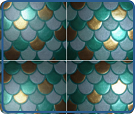
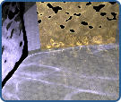
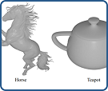
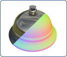
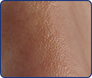
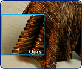
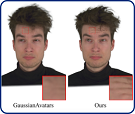
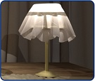
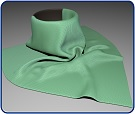

2026
|
|
Zixiong Wang, Jian Yang, Yiwei Hu, Miloš Hašan, Beibei Wang#
HiMat: DiT-based Ultra-High Resolution SVBRDF Generation
Computer Graphics Forum (Proceedings of Eurographics), 2026. To appear
|
2025
|
|  |
Youxin Xing, Zheng Zeng, Youyang Du, Lu Wang#, Beibei Wang#
Diffusion-Guided Relighting for Single-Image SVBRDF Estimation
Proceedings of SIGGRAPH Asia, 2025.
|
|  |
Pengpei Hong, Meng Duan, Beibei Wang, Cem Yuksel, Tizian Zeltner, Daqi Lin
Sample Space Partitioning and Spatiotemporal Resampling for Specular
Manifold Sampling
Proceedings of SIGGRAPH Asia, 2025. To appear
|
|  |
Zuo-Liang Zhu, Beibei Wang#, Jian Yang#
GS-ROR2: Bidirectional-guided 3DGS and SDF for Reflective Object
Relighting and Reconstruction
ACM Transactions on Graphics, 2025.
|
|  |
Zuo-Liang Zhu, Jian Yang#, Beibei Wang#
Gaussian Splatting with Discretized SDF for Relightable Assets
ICCV, 2025.
|
|  |
Youyang Du, Lu Wang#, Beibei Wang#
Facial Microscopic Structures Synthesis from a Single Unconstrained Image
Proceedings of SIGGRAPH 2025, 2025.
|
|  |
Zilin Xu, Xiang Chen, Chen Liu, Beibei Wang, Lu Wang, Zahra Montazeri, Ling-Qi Yan
Towards Comprehensive Neural Materials: Dynamic Structure-Preserving Synthesis with Accurate Silhouette at Instant Inference Speed
Proceedings of SIGGRAPH 2025, 2025.
|
 |
Ruizeng Li, Xinyang Liu, Runze Wang, Pengfei Shen, Ligang Liu#, Beibei Wang#
Bidirectional Plateau-Border Scattering Distribution Function for Realistic and Efficient Foam Rendering
EGSR, 2025.
|
|  |
Jiawei Lu, Kunxin Guang, Conghui Hao, Kai Sun, Jian Yang, Jin Xie, Beibei Wang#
Joint Gaussian Deformation in Triangle-Deformed Space for High-Fidelity Head Avatars
EGSR, 2025.
|
 |
Hanxiao Sun, Yupeng Gao, Jin Xie, Jian Yang, Beibei Wang#
SVG-IR: Spatially-Varying Gaussian Splatting for Inverse Rendering
CVPR, 2025.
|
 |
Jiahui Fan, Funjun Luan, Jian Yang, Miloš Hašan, Beibei Wang#
RNG: Relightable Neural Gaussians
CVPR, 2025.
|
2024
|
 |
Di Luo, Hanxiao Sun, Lei Ma, Jian Yang, Beibei Wang#
Correlation-aware Encoder-Decoder with Adapters for SVBRDF Acquisition
Proceedings of SIGGRAPH Asia 2024, 2024.
|
|
Jia Li, Lu Wang#, Lei Zhang, Beibei Wang#
TensoSDF: Roughness-aware Tensorial Representation for Robust Geometry and Material Reconstruction
ACM Transactions on Graphics (Proceedings of SIGGRAPH 2024), 2024.
|
|  |
Yingjie Tang, Zixuan Li, Miloš Hašan, Jian Yang, Beibei Wang#
Woven Fabric Capture with a Reflection-Transmission Photo Pair
Proceedings of SIGGRAPH 2024, 2024.
|
|  |
Xiang Chen, Lu Wang#, Beibei Wang#
Real-time Neural Woven Fabric Rendering
Proceedings of SIGGRAPH 2024, 2024.
|
 |
Jia Li, Ziling Chen, Xiaolong Wu, Lu Wang#, Beibei Wang#, Lei Zhang
Neural Super-Resolution for Real-time Rendering with Radiance Demodulation
CVPR, 2024.
|
2023
|
 |
Yuang Cui, Gaole Pan, Jian Yang, Lei Zhang, Ling-Qi Yan, Beibei Wang#
Multiple-bounce Smith Microfacet BRDFs using the Invariance Principle
Proceedings of SIGGRAPH Asia 2023, 2023 (Dec.)
|
 |
Jie Guo, Zeru Li, Xueyan He, Beibei Wang, Wenbin Li, Yanwen Guo, Ling-Qi Yan
MetaLayer: A Meta-learned BSDF Model for Layered Materials
ACM Transactions on Graphics (Proceedings of SIGGRAPH Asia 2023), 2023 (Dec.)
|
 |
Hangyu Zhang, Beibei Wang#
World-Space Spatiotemporal Path Resampling for Path Tracing
Computer Graphics Forum (Proceedings of PG 2023), 2023.
|
 |
Xiangfeng Xu, Lu Wang#, Beibei Wang#
Efficient Caustics Rendering via Spatial and Temporal Path Reuse
Computer Graphics Forum (Proceedings of PG 2023)
|
 |
Wenshi Wu, Beibei Wang#, Miloš Hašan, Lei Zhang, Zhong Jin, Ling-Qi Yan
Efficient Participating Media Rendering with Differentiable Regularization
CVMJ, 2023
|
 |
Youxin Xing, Gaole Pan, Xiang Chen, Ji Wu, Lu Wang#, Beibei Wang#
Real-time All-frequency Global Illumination with Radiance Caching
CVMJ, 2023
|
 |
Jiahui Fan, Beibei Wang#, Miloš Hašan, Jian Yang#, Ling-Qi Yan
Neural Biplane Representation for BTF Rendering and Acquisition
Proceedings of SIGGRAPH 2023, 2023 (July)
|
 |
Pengfei Shen, Ruizeng Li, Beibei Wang#, and Ligang Liu#
Scratch-based Reflection Art via Differentiable Rendering
ACM Transactions on Graphics (Proceedings of SIGGRAPH 2023), 2023 (July)
|
 |
Beibei Wang, Wenhua Jin, Miloš Hašan, Ling-Qi Yan
SpongeCake: A Layered Microflake Surface Appearance Model
ACM Transactions on Graphics (presented at Siggraph 2023), Volume 42, Issue 1, Article No.: 8pp 1–16. 2022.
|
2022
|
 |
Wenhua Jin, Beibei Wang#, Miloš Hašan, Yu Guo, Steve Marschner, Ling-Qi Yan
Woven Fabric Capture from a Single Photo
Proceedings of SIGGRAPH Asia 2022.
|
 |
He Li, Beibei Wang#, Changehe Tu#, Kun Xu, Nicolas Holzschuch, Ling-Qi Yan
Unbiased Caustics Rendering Guided by Representative Specular Paths
Proceedings of SIGGRAPH Asia 2022.
|
 |
Jiahui Fan, Beibei Wang#, Miloš Hašan, Jian Yang#, Ling-Qi Yan
Neural Layered BRDFs
Proceedings of SIGGRAPH 2022, 2022 (July)
|
 |
Beibei Wang, Wenhua Jin, Jiahui Fan, Jian Yang, Nicolas Holzschuch, Ling-Qi Yan
Position-free Multiple-bounce Computations for Smith Microfacet BSDFs
ACM Transactions on Graphics (Proceedings of SIGGRAPH 2022), Volume 41, Issue 4, Article No.:134, pp 1–14. 2022 (July)
|
 |
Tao Wen, Beibei Wang#, Lei Zhang, Jie Guo, Nicolas Holzschuch
SVBRDF Recovery From a Single Image With Highlights using a Pretrained Generative Adversarial Network
Computer Graphics Forum, 2022
|
 |
Hong Deng, Yang Liu, Beibei Wang#, Jian Yang, Lei Ma, Nicolas Holzschuch, Ling-Qi Yan
Constant-Cost Spatio-Angular Prefiltering of Glinty Appearance Using Tensor Decomposition
ACM Transactions on Graphics, Volume 41, Issue 2, Article No.:22, pp 1–17. 2022
|
 |
Jiahui Fan, Beibei Wang*, Miloš Hašan, Jian Yang#, Ling-Qi Yan
Efficient Specular Glints Rendering with Differentiable Regularization
IEEE TVCG, 2022
|
 |
Wenshi Wu, Beibei Wang#, Ling-Qi Yan#
A Survey on Homogeneous Participating Media Rendering
Computational Visual Media, volume 8, pages177–198 (2022)
|
2021
|
 |
Tao Zhuang, Pengfei Shen, Beibei Wang#, Ligang Liu
Real-time Denoising Using BRDF Pre-integration Factorization
Computer Graphics Forum (Proceedings of Pacific Graphics), 2021 (Oct)
|
 |
Liangsheng Ge, Beibei Wang*, Lu Wang, Xiangxu Meng,Nicolas Holzschuch.
Interactive Simulation of Scattering Effects in Participating Media Using a Neural Network Model
IEEE Transactions on Visualization and Computer Graphics, Vol.27, No. 7, pp. 3123 - 3134. July, 2021
|
 |
Zhongmin Xue, Beibei Wang#,Lei Ma#
A Deep Learning Method for 2D Image Stipplingn
Computer Graphics International, 2021 (Sep)
|
 |
Beibei Wang, Jiahui Fan
均匀参与介质的渲染方法研究
中国图象图形学报, Volume 26, Number 5, 2021
|
 |
Weiheng Lin, Beibei Wang#, Jian Yang, Lu Wang, Ling-Qi Yan
Path-based Monte Carlo Denoising Using a Three-Scale Neural Network
Computer Graphics Forum, Feb. 2021. Volume 40, Issue 1, Pages 369-381
|
2020
|
 |
Zilin Xu, Qiang Sun*, Yanning Xu, Lu Wang, Beibei Wang
Unsupervised Image Reconstruction for Gradient-Domain Volumetric Rendering
Computer Graphics Forum (Proceedings of Pacific Graphics),2020 (Oct), 39(7): 193-203.
|
 |
Beibei Wang, Miloš Hašan, Ling-Qi Yan
Path Cuts: Efficient Rendering of Pure Specular Light Transport
ACM Transactions on Graphics (Proceedings of SIGGRAPH Asia 2020), Volume 39, Issue 6, Article 238.
|
 |
Yezi Zhao, Beibei Wang(*), Yanning Xu, Zheng Zeng, Lu Wang, Nicolas Holzschuch.
Joint SVBRDF Recovery and Synthesis From a Single Image using an Unsupervised Generative Adversarial Network
EGSR 2020
|
 |
Zheng Zeng, Lu Wang#Beibei Wang#,Chunmeng Kang, Yanning Xu.(#corresponding author.)
Denoising Stochastic Progressive Photon Mapping Renderings Using a Multi-Residual Network
Journal of Computer Science and Technology, 35(3), 506–521
|
 |
Beibei Wang,Hong Deng, Nicolas Holzschuch.
Real-Time Glints Rendering with Prefiltered Discrete Stochastic Microfacets
Computer Graphics Forum, Volume39, Issue6, September 2020. Pages 144-154
|
 |
Beibei Wang, Miloš Hašan, Nicolas Holzschuch, Ling-Qi Yan
Example-Based Microstructure Rendering with Constant Storage
ACM Transactions on Graphics (present at SIGGRAPH 2020), 39(5): Article 162.
|
 |
Hong Deng, Beibei Wang#, Rui Wang, Nicolas Holzschuch.
A Practical Path Guiding Method for Participating Media
Computational Visual Media Journal, Springer, Vol. 6, No. 1, March 2020, 37–51.
|
 |
Weiheng Lin, Beibei Wang#, Lu Wang, Nicolas Holzschuch.
A Detail Preserving Neural Network Model for Monte Carlo Denoising
Computational Visual Media Journal, Vol. 6. April 2020, 157–168.
|
 |
Yulin Liang, Beibei Wang*, Lu Wang, Nicolas Holzschuch.
Fast Computation of Single Scattering in Participating Media with Refractive Boundaries using Frequency Analysis
IEEE Transactions on Visualization and Computer Graphics, Vol.26, No. 10, pp. 2961-2969. 2020.
|
 |
Beibei Wang, Liangsheng Ge, Nicolas Holzschuch.
Precomputed Multiple Scattering for Rapid Light Simulation in Participating Media
IEEE Transactions on Visualization and Computer Graphics, Vol. 26, No. 7, pp. 2456 - 2470, July 2020.
|
2019
|
 |
王贝贝，王璐，肖懿，王锐.
基于物理的真实感绘制方法研究进展.
中国计算机科学技术进展报告（CCF2018-2019）.
|
 |
Xiang Xu,Beibei Wang, Lu Wang, Chenglei Yang, Xiangxu Meng.
An Efficient Distributed Global Illumination Method Based on Photon Mapping
Computer & Graphics, Elsevier, Vol. 82, August 2019, Pages 214-221
|
 |
Lei Ma, Hong Deng, Beibei Wang, Yanyun Chen, Tamy Boubebeur.
Real-time structure aware color stippling
Siggraph, Poster,2019
|
2018
|
 |
Beibei Wang, Nicolas Holzschuch.
Point-Based Rendering for Homogeneous Participating Media with Refractive Boundaries
IEEE Transactions on Visualization and Computer Graphics, 2018, 24 (10), pp.2743-2757.
|
 |
Beibei Wang, Lu Wang, Nicolas Holzschuch.
Fast Global Illumination with Discrete Stochastic Microfacets Using a Filterable Model
Computer Graphics Forum, Wiley, 2018, 37 (7), pp.55-64.
code
|
 |
Liangsheng Ge, Beibei Wang, Lu Wang, Nicolas Holzschuch.
A Compact Representation for Multiple Scattering in Participating Media using Neural Networks
Siggraph 2018 Talks, Aug 2018, Vancouver, Canada. pp.1-2.
|
2017
|
 |
Xiang Xu, Beibei Wang, Lu Wang, Yanning Xu, Tamy Boubekeur.
Vectorized Point based Global Illumination on Intel MIC Architecture
Computers and Graphics, 70:206-213, February 2018
|
 |
Huw Bowles, Daniel Zimmermann, Gioacchino Noris, Beibei Wang
Crest: Novel Ocean Rendering Techniques in an Open Source Framework
Siggraph 2017 Advances in Real-Time Rendering in Games, Jul 2017, Los angeles, United States
|
 |
Beibei Wang, Nicolas Holzschuch.
Precomputed Multiple Scattering for Light Simulation in Participating Medium
Siggraph 2017 Talk, Jul 2017, Los Angeles, United States. pp.Article No. 35,
|
2016
|
 |
Beibei Wang, Huw Bowles
A Robust and Flexible Real-Time Sparkle Effect
EGSR 2016 E&I - Eurographics Symposium on Rendering - Experimental Ideas & Implementations, Jun 2016, Dublin, Ireland. pp.49-54.
|
 |
Beibei Wang, Jean-Dominique Gascuel, Nicolas Holzschuch
Point-Based Light Transport for Participating Media with Refractive Boundaries
Eurographics Symposium on Rendering 2016 - Experimental Ideas & Implementations, Jun 2016, Dublin, Ireland.
|
2015
|
 |
Huw Bowles, Beibei Wang
Sparkly but not too sparkly! Anti-aliasing a procedural sparkle effect
Siggraph 2015 Advances in Real-time Rendering in Games, Aug 2015, Los Angeles, United States
|
 |
Beibei Wang, Xiangxu Meng, Tamy Boubekeur
Non-diffuse effects for point-based global illumination
Siggraph 2015, Aug 2015, Los Angeles United States.
|
 |
Beibei Wang, Xiangxu Meng, Tamy Boubekeur.
Wavelet Point-Based Global Illumination.
Computer Graphics Forum. vol.34.4(2015),pp.143-154(EGSR 2015)
|
2014
|
 |
Beibei Wang
基于点缓存的全局光照方法研究
Computer Science [cs]. Shandong University, 2014. Chinese
|
2013
|
 |
Beibei Wang, Jing Huang, Bert Buchholz, Xiangxu Meng and Tamy Boubekeur.
Factorized Point-Based Global Illumination.
Computer Graphics Forum, vol.32.4(2013), pp.117-123 (EGSR 2013)
|
2011
|
 |
Beibei Wang, Xiangxu Meng, Xu Yanning, Song Xijun
Fast Point Based Global Illumination
Computer-Aided Design and Computer Graphics, Sep 2011, Jinan, China.
|